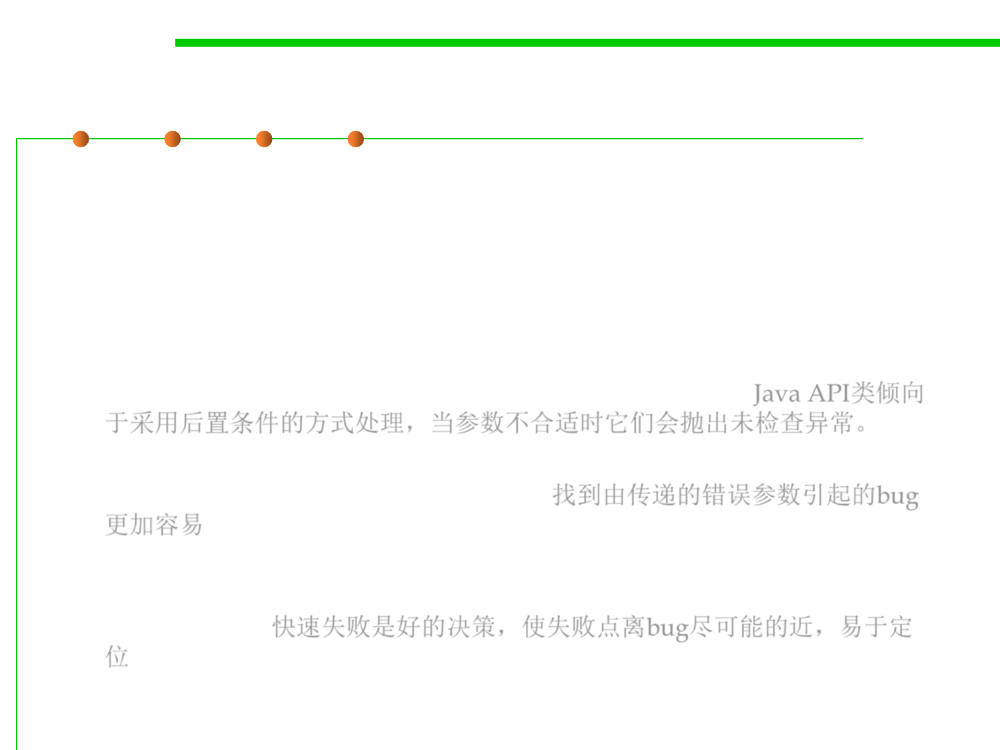

Precondition or postcondition?
3.2 Designing Specification
▪ For user: A non-trivial precondition inconveniences clients, because
they have to ensure that they don’t call the method in a bad state
(that violates the precondition); if they do, there is no predictable
way to recover from the error. So users of methods don’t like
preconditions.
– Thus, Java API classes tend to specify (as a postcondition) that they throw
unchecked exceptions when arguments are inappropriate. Java API类倾向
于采用后置条件的方式处理，当参数不合适时它们会抛出未检查异常。
– This makes it easier to find the bug or incorrect assumption in the caller
code that led to passing bad arguments. 找到由传递的错误参数引起的bug
更加容易
– In general, it’s better to fail fast , as close as possible to the site of the bug,
rather than let bad values propagate through a program far from their
original cause. 快速失败是好的决策，使失败点离bug尽可能的近，易于定
位